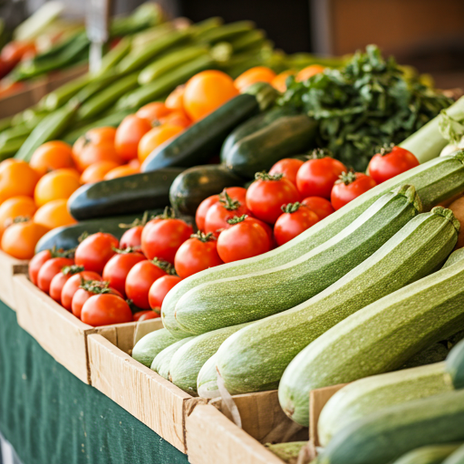
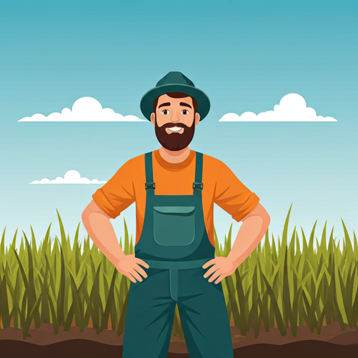

La Qualité Parisienne,
L'Âme de Bamako.
La destination ultime pour les importations européennes haut de gamme et les meilleurs produits locaux au cœur de l'ACI 2000.

Le Choix des Expatriés à ACI 2000
Niché dans le quartier principal de Bamako, Coccinelle est plus qu'une épicerie : c'est un sanctuaire pour les palais exigeants.
2024
Emplacement Stratégique
Idéalement situé à ACI 2000 pour un accès facile et un stationnement sécurisé.

Exclusivités Belle France
Accédez à toute la gamme des délices français authentiques, du Comté aux croissants au beurre, livrés frais dans nos rayons.
Logistique Accélérée
Nos arrivages aériens quotidiens garantissent que 'Frais depuis Paris' est une promesse, pas seulement un slogan.
Standards Internationaux
Des allées propres, spacieuses et climatisées, conçues pour une expérience d'achat confortable.
Équipe Multilingue
Notre équipe est formée pour vous assister en français et en anglais pour un service irréprochable.

Quotidiens
Fraîcheur Garantie.
Chez Coccinelle, nous savons que la qualité commence à la source. Notre partenariat exclusif avec Belle France amène la campagne française sur votre table, tous les jours.
-
eco
Sélection Biologique
Des produits sans pesticides provenant de fermes durables certifiées.
-
ac_unit
Chaîne du Froid
Réfrigération ininterrompue de la piste d'atterrissage à nos entrepôts.
La Parole de Notre Communauté
"Le meilleur supermarché pour les expatriés à Bamako. On y trouve vraiment tout ce qui nous manque de l'Europe."
Jean-Pierre M.
Mission Diplomatique
"Produits conformes et frais. Le service livraison via WhatsApp est un vrai gain de temps pour ma famille."
Sarah Williams
Résidente de ACI 2000

Prêt à réinventer vos courses ?
Visitez notre magasin principal à ACI 2000 ou profitez de notre service VIP de livraison à domicile.